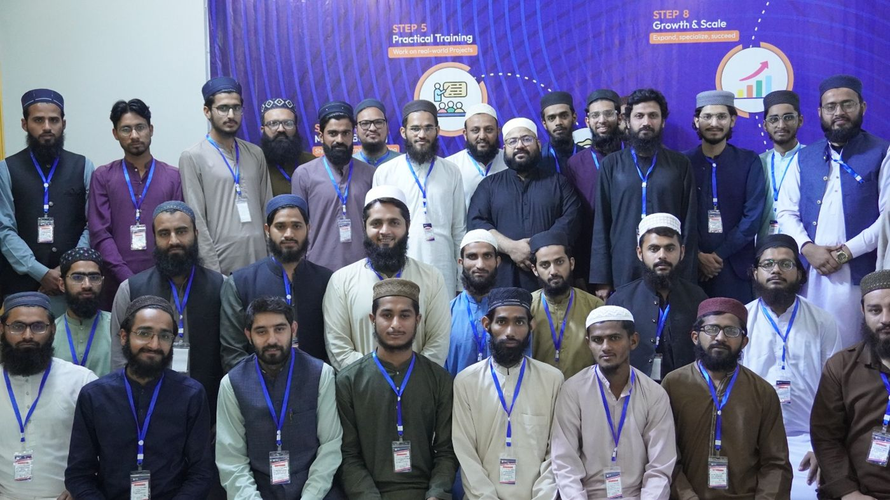
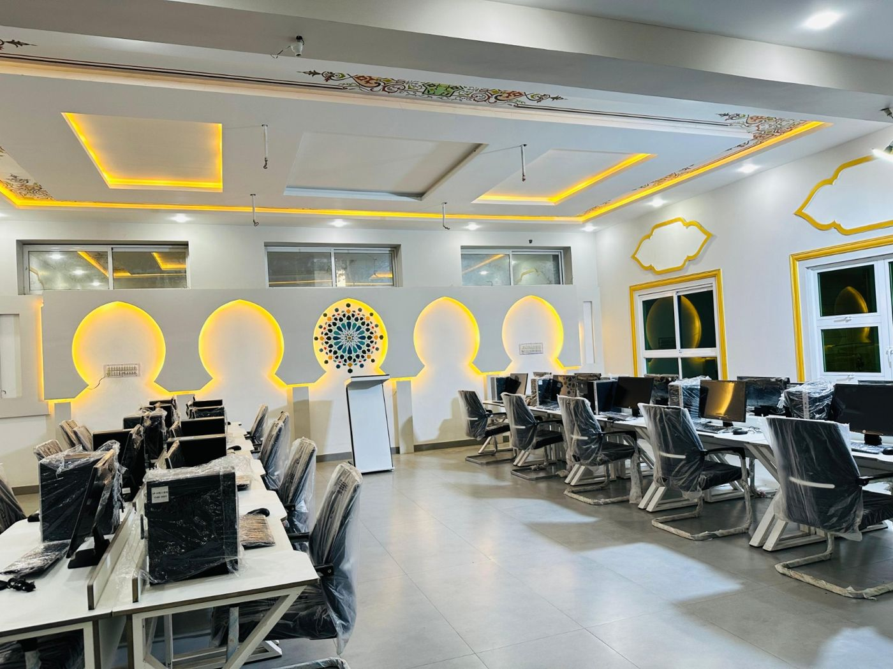
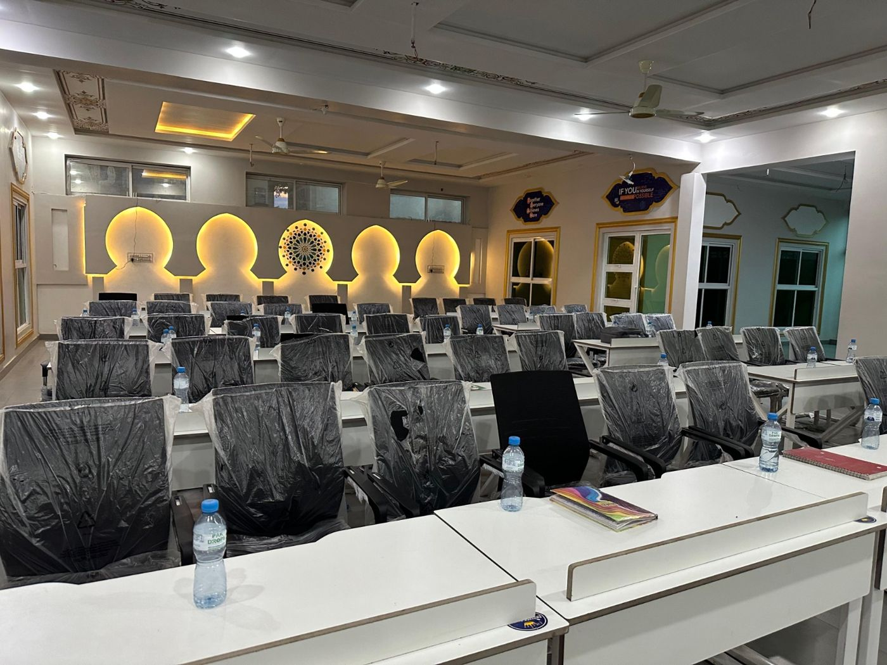

مدثر عارف
مینیجر – اسکل ڈویلپمنٹ سسٹم
انتظامیہ، آپریشنز اور پروگرام مینجمنٹ میں 10 سال سے زائد کا تجربہ۔
UBK پاکستان کا ایک تربیتی ادارہ ہے جو مدارس کے فضلا کو عملی اور آمدنی والے ڈیجیٹل ہنر سکھاتا ہے۔

ہر سال ہزاروں طلبہ مضبوط کردار، نظم و ضبط اور دینی علم کی گہری بنیاد کے ساتھ مدارس سے فارغ ہوتے ہیں — لیکن ان کے پاس وہ عملی ہنر نہیں ہوتے جن کی آج کی معیشت قدر کرتی ہے۔ UBK اسی خلا کو پُر کرتا ہے۔
ہم ڈیجیٹل ہنر کی منظم اور مینٹر کی زیرِ نگرانی تربیت دیتے ہیں جو براہ راست فری لانس آمدنی، ملازمت یا اپنے کاروبار تک لے جاتی ہے۔ ہر پروگرام نظریے کے بجائے حقیقی کلائنٹ ورک پر مبنی ہے۔

جدید سہولیات جہاں طلبہ سیکھتے، مشق کرتے اور حقیقی پروجیکٹس پر مل کر کام کرتے ہیں۔




وہ افراد جو اسکل ڈویلپمنٹ سسٹم چلاتے ہیں اور روزانہ ہمارے طلبہ کو تربیت دیتے ہیں۔
مینیجر – اسکل ڈویلپمنٹ سسٹم
انتظامیہ، آپریشنز اور پروگرام مینجمنٹ میں 10 سال سے زائد کا تجربہ۔
ٹرینر – ڈیجیٹل مارکیٹنگ، ای کامرس اور اے آئی
اے آئی کامرس ماسٹری کے بانی و ڈائریکٹر، مقامی اور عالمی مارکیٹس میں 5 سال سے زائد کا تجربہ۔
گرافک ڈیزائن انسٹرکٹر
2020 سے گرافک ڈیزائنر اور ویڈیو ایڈیٹر، پیکیجنگ ڈیزائن میں مہارت۔
مہمانوں کے دورے، مہمات اور خطابات جو ہمارے طلبہ اور کمیونٹی کو جوڑتے ہیں۔

اگلے بیچ کے لیے داخلے جاری ہیں۔ پانچ منٹ میں اپلائی کریں۔